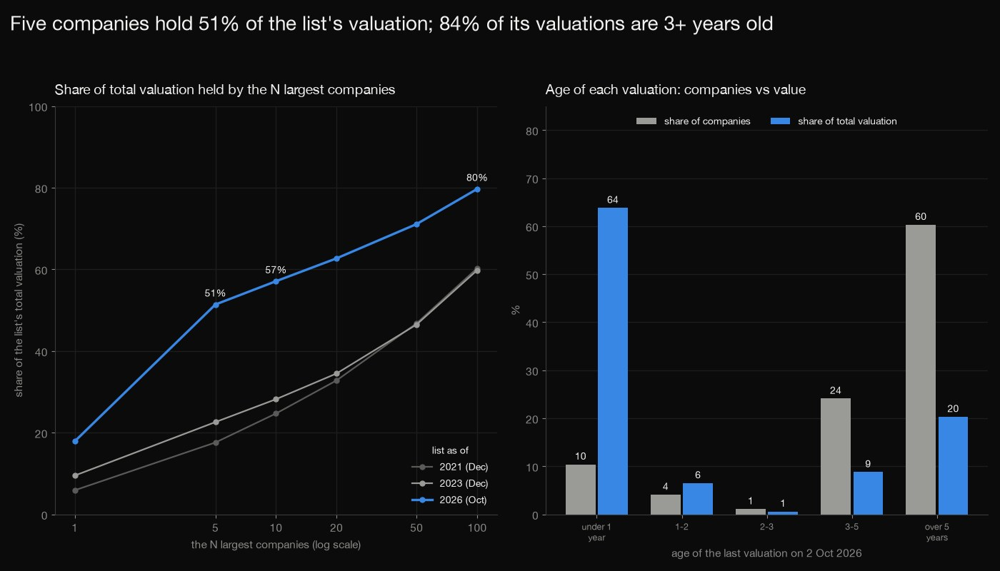
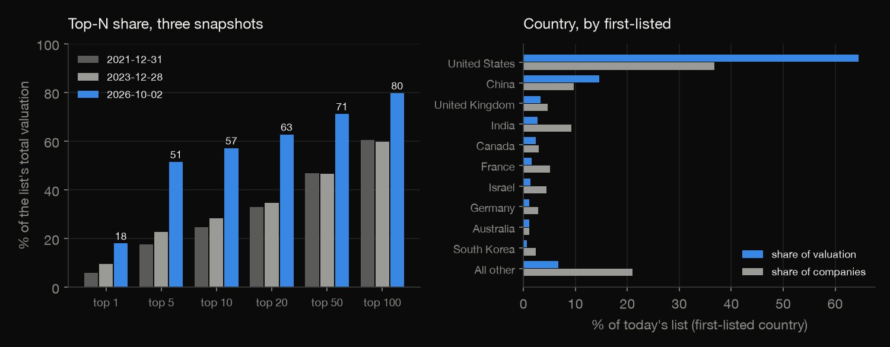
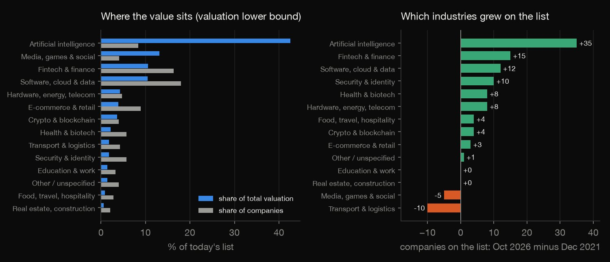
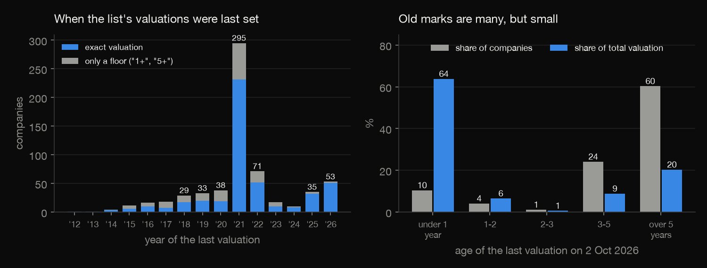
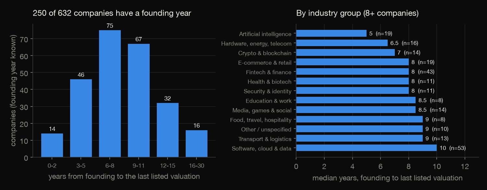
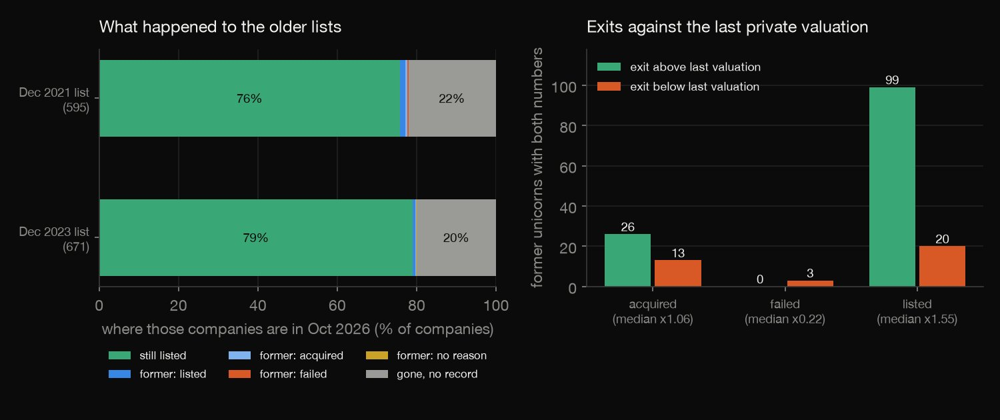

SQL · Venture data · 2026-10
Do Five Companies Hold Half the Unicorn Value?
Five companies hold 51% of the $5.4 trillion that Wikipedia's unicorn list carries (AI alone 43%) and the US and China 79%. 84% of the valuations are 3+ years old yet hold 29% of the value, and 22% of the 2021 list vanished with no recorded exit.

Counts and totals are of Wikipedia's volunteer-edited list at three pinned revisions, not of the world: CB Insights' count on the same page is 1,334 against 632 here. Valuations are last-round paper prices, 164 of them only a floor ("1+"), so totals are lower bounds, and the list has no date a company became a unicorn. Removed companies are not explained. Text CC BY-SA 4.0 (Wikipedia contributors; the parsed tables share that licence); founding years from Wikidata (CC0).
01 — The problem
The unicorn story says there are hundreds of billion-dollar startups. Is the value spread over hundreds of companies, or does a handful carry it, and how old and how survivable are the valuations behind it?
The task follows DataCamp's "Analyzing Unicorn Companies" (SQL on CB Insights' file of companies valued at over $1 billion). That file is not open, so the data is Wikipedia's "List of unicorn startup companies", read through the MediaWiki API at three pinned revisions (December 2021, December 2023, October 2026): the same columns, plus the thing a single file lacks, the list at three dates, so who disappeared can be measured.
02 — What I built
One public list, three snapshots, 21 SQL queries:
- Parse and audit: 632 current rows and 209 former unicorns, 164 valuations that are only a floor, four shifted rows repaired by name, 258 companies without an article.
- Industry, country, concentration: 179 free-text labels grouped by regular expression, first-listed country, top-N shares at three dates.
- Stale valuations and age: months since each valuation; Wikidata founding years for 250 companies.
- Survivorship: each company of the older lists matched to today's list and former table, and exits compared with the last private valuation.
- Check:
check.pyrecounts all 1,155 numbers in plain Python, with no database and no data library.
03 — How it was built
- 01
Pin three revisions of the list
The list is fetched through the MediaWiki API (not by crawling pages), one request at a time, at three fixed revisions: 31 December 2021, 28 December 2023 and 2 October 2026. Each has a table of current unicorns and one of former unicorns. Founder names are not kept; only company, valuation, dates, industry and country. The raw answers (about 5.4 MB) are not committed.
SNAPS = {1062932765: "2021-12-31", 1192312891: "2023-12-28", 1378068558: "2026-10-02"} - 02
Read the valuations honestly
"1+" means at least 1, and one range (Binance, 80-90) is read at its low end, so each such valuation is a floor and every total a lower bound. Dates come as "May 2026", "2022" or "26 January 2024". Four rows that Wikipedia's own table had shifted by a cell are repaired by name and marked.
m = re.fullmatch(r"(\d+(\.\d+)?)\+", s) - 03
Group the industries in SQL
The 179 free-text industry labels become 15 groups: take the first-listed item of the label, then the first rule in
industry_rules.csv(by priority) whose regular expression matches. Blank labels are "Not stated", and the first-listed country is the company's country.QUALIFY row_number() OVER (PARTITION BY f.industry_raw ORDER BY CAST(r.priority AS INTEGER)) = 1 - 04
Follow each company across the revisions
Every company of an older list is looked up in today's list and in today's former-unicorns table, by normalised name or by article link, so it ends up still listed, a former unicorn with a recorded reason, or in neither table.
(SELECT COUNT(*) FROM cur c WHERE c.nname = o.nname OR (o.link <> '' AND c.link = o.link)) AS n_now, - 05
Recount it all without the database
check.pyrebuilds every result table from the parsed tables with csv, re, statistics and loops (no DuckDB, no SQL, no pandas) and requires each cell to equal the SQL's, at the precision the SQL rounded to: 1,155 numbers.assert abs(got - float(want)) <= 0.5 * 10 ** (-dec) + 1e-9, f"{label}: recount {got} != SQL {want}"
04 — Results
The list and what it counts. On 2 October 2026 it holds 632 companies and 209 former unicorns. Only 468 valuations are exact; 164 are a floor ("1+" for 152 of them), so the total of at least $5.38 trillion is a lower bound. The same page quotes CB Insights at 1,334 unicorns and $5.4 trillion in November 2025: this list holds 47% of those companies and 99% of that total. In the table, Top 10 is the share of the total held by the ten largest.
| List | Companies | Total | Top 10 |
|---|---|---|---|
| Dec 2021 | 595 | $2.38tn | 24.7% |
| Dec 2023 | 671 | $2.82tn | 28.2% |
| Oct 2026 | 632 | $5.38tn | 57.1% |
Five companies hold half. The five largest hold 51.4% of the total, the top 10 57.1% and the top 100 79.7%; Anthropic alone holds 17.9%. In December 2021 it took 60 companies to reach half, in December 2023 61. The sixth largest, Binance ($80bn), is valued as of 2021.
| Company | $bn | Share | Running |
|---|---|---|---|
| Anthropic | 965 | 17.9% | 17.9% |
| OpenAI | 852 | 15.8% | 33.8% |
| ByteDance | 600 | 11.1% | 44.9% |
| Databricks | 190 | 3.5% | 48.4% |
| Stripe | 159 | 3.0% | 51.4% |
| Binance | 80 | 1.5% | 52.9% |
| Revolut | 75 | 1.4% | 54.3% |
| Anduril Industries | 61 | 1.1% | 55.4% |
| Cognition AI | 48 | 0.9% | 56.3% |
| Canva | 42 | 0.8% | 57.1% |

AI is 8% of the companies and 43% of the value. It is 53 companies and $2,291bn, with a median exact valuation of $6.3bn; in December 2021 it was 18 companies and 3.0% of the value. In the table, Value is the share of the total and vs 2021 the change in the number of companies. That is growth on the list (additions less removals): the "Not stated" label fell from 97 to 49 companies, so part of each group's growth is labels being filled in.
| Group | Firms | Value | vs 2021 |
|---|---|---|---|
| AI | 53 | 42.6% | +35 |
| Media | 26 | 13.1% | -5 |
| Fintech | 103 | 10.6% | +15 |
| Software | 114 | 10.5% | +12 |
| Hardware | 30 | 4.3% | +8 |
| E-commerce | 56 | 3.9% | +3 |
| Crypto | 25 | 3.6% | +4 |
| Health | 36 | 2.2% | +8 |

The United States and China. With the first-listed country, the United States has 36.7% of the companies and 64.5% of the value, China 9.7% and 14.6%. Together they are 79.1% of the value (81.4% counting any mention, as in Israel / United States). The table gives their combined share of companies and of value: the rise is in value, not in the number of companies.
| List | Companies | Value |
|---|---|---|
| Dec 2021 | 48.2% | 60.1% |
| Dec 2023 | 45.8% | 63.5% |
| Oct 2026 | 46.4% | 79.1% |
Most valuations are old, and small. 533 of 632 companies (84.3%) were last valued at least 36 months ago (median 62.0 months), yet together they are 29.1% of the value. 295 companies (46.7%) were last valued in 2021, the year with most valuations on the list, and the 53 valued in 2026 carry 60.3% of the value. By group the stale share runs from 30.2% (AI) to 100% (crypto, all 25 companies).
| Last valued | Companies | Value |
|---|---|---|
| Under 1 year | 10.4% | 63.8% |
| 1-2 years | 4.1% | 6.5% |
| 2-3 years | 1.1% | 0.6% |
| 3-5 years | 24.1% | 8.8% |
| Over 5 years | 60.3% | 20.3% |

Age at the last listed valuation. The list has no "date it became a unicorn" column, so years from founding to unicorn cannot be computed. For the 250 companies with a founding year on Wikidata the median is 8 years between founding and the last listed valuation, an upper bound on the age at which they became unicorns; 24% were 5 or younger and 36% 10 or older. Known is the number with a founding year, Coverage the share of the size band. AI is the youngest group (median 5 years, 19 companies), software the oldest (10, 53).
| Valued | Known | Coverage | Median |
|---|---|---|---|
| $1-2bn | 97 | 29% | 8 yr |
| $2-5bn | 71 | 44% | 8 yr |
| $5bn+ | 82 | 59% | 8 yr |
| All | 250 | 40% | 8 yr |

The list loses companies quietly. Of the 595 companies on the December 2021 list, 451 (75.8%) are still listed, 13 are in the former-unicorns table (only 2 with a failure recorded) and 131 (22.0%, $519bn of their 2021 value) are in neither table, with no reason given. The ten largest of those are Klarna, Chime, FTX, Byju's, Trendyol, Brex, SenseTime, Northvolt, Aurora, Reddit; the page does not say whether they listed, were sold or failed. Of the 450 still-listed 2021 companies matched one to one, 401 (89.1%) show the same valuation date as in 2021; of the re-priced ones with exact numbers 32 went up (median 2.25x) and 5 down (0.7x).
| List | Listed | Former | Gone |
|---|---|---|---|
| Dec 2021 (595) | 76% | 2% | 22% |
| Dec 2023 (671) | 79% | 1% | 20% |
Exits against paper valuations. For 173 of the 209 former unicorns both the last private valuation and the exit valuation are exact: 125 exited above and 36 below, a median of 1.44x (1.55x for listings, 1.06x for acquisitions). The 8 recorded failures have numbers for 3 (median 0.22x); the companies that vanished without a record are not in this comparison.

Counts of the list, not of the world. The page's own country table, which counts exits, has 1,126 United States and 279 China unicorns; this list and its former table have 332 and 104. 4 rows were repaired by hand, 10 former-unicorn rows carry a last valuation dated after the exit, and 258 of 632 companies have no Wikipedia article.
05 — What I'd do next
- Add the date each company first crossed $1 billion (from a funding-round source) so that time to unicorn can be computed, which this list cannot give.
- Read every revision, not three, to date additions and removals, and look up what happened to each vanished company (IPO, sale, closure) in a second source.
- Check the largest valuations against their cited reports and separate priced rounds from estimates, since five companies carry half the value.